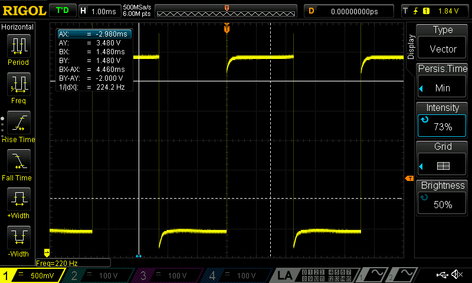

Lab 4 Report
Introduction
In this lab, we used the microcontroller in order to play a sound by setting a frequency for the pitch, and then configuring a timer/delay to hold the note for a specific duration. We used a PLL as our system clock, and then fed that to two different TIMER register busses on our system, and then controlled one to be a PWM generator (for the tone frequency), and then another one as the timer for the delay.
Design and Testing Methodology
In order to approach the design of the project, I first had to understand the datasheet and reference manual of STMLK324KC microcontroller. This was critical because from here I knew which registers to enable or set to certain values. The datasheet had information on which bits of the ACC register set would enable the clock to the timers. And then, it had information on how to setup PWM for a timer, and enable that as an input into a GPIO pin we could connect the speaker to. From here, we could also set up the counter to set the duration of our delays, etc. Ultimately, the first step to the design process was to understand the datasheet and figure out which registers we need to set. In order to test our design, we did not create testbenches for this like the verilog/FPGA labs. Instead, I used the debugger to walk through the logic of my code, and I brought up all the relevant register signals, so I could see how every line I was working through was changing the state of the MCU, and if I saw that something wasn’t happening according to how I wanted, then I would revise the datasheet. Additionally, I would measure the signals on an oscilloscope so I could see if I was getting an oscillating frequency where I wanted it.
Technical Documentation:
The source code for the project can be found in the associated Github repository
Oscilloscope Frequency Measurements
The images show the oscilloscope trace with the frequency, so we can see how closely it is matching up with the expected frequency the audio is supposed to play.
Figure 2 above was for the first note which should have been 659Hz, but instead it is 658Hz, however it is really close to the expected value, and within 1%.
The figure above is supposed to be for the 13th note, which was coded as 440Hz, however it is actually 438Hz, which is still quite close to the expected value, and within 1%.
The note above was for a frequency that should have been at 236Hz, but it is instead at 260Hz, which is still close, and within 1%.
The image above is to show that our highest note which was at 1.3kHz, can also be played and reached with our PWM.
 And this image above shows how we can also hit our minimum pithch frequency range of 220Hz, although the lowest our system can reach was calcualted to be even smaller (around 78Hz).
Schematic
The image above is the schematic of our circuit, which is connected to our speaker. We used the LM386 low voltage audio power amplifier, in order to take our PWM output from a GPIO MCU pin, and play a tone. We used a variety of resistors and capacitors in order to control the audio, ultimately connecting to an external speaker. Additionally, we added a potentiometer to control the volume of the audio that was outputted on the speaker.
In Figure 8 we can see all the calculations performed to find the min and max frequencies and durations we can support with our clock, and the min and max durations we can hold the delay for.
Figure 9 above shows the difference between the actual and expected frequencies, because of the rounding that happens when we set out values to arr.
Results and Discussion
I was able to accomplish all of the prescribed tasks in this project. I also met all the intended design objectives, and was able to check off all the components in the spec, along with the excellence components.
If I was given more time, I would have tried to connect to two speakers using two other timer register busses, so I could play different tones at the same time and enhance the music output. Additionally, I would have tried to play a better, more complex sound had I been better at interpreting sheet music.
The design performs as expected, and does play the songs I want it to, and it is is reliable. The only thing is that the potentiometer is really sensitive, making it more challening to control the audio volume.
Conclusion
The overall design works as expected, and we are able to play Fur Elise and another song of our choice on the speakers, by using the MCU clock to generate a PWM frequency for the tone, as well as for a delay timer. In other words, our PLL clock goes to two timer busses to generate a PWM signal for our frequency and create a timer for our audio. Overall, I spent 20 hours on this lab.
AI Prototype Summary
Figure 10 shows the result of the AI prototype, and it had a decent line of reasoning or chain of logic in order to determine what timer to use. However, ultimately it picked TIM2 which is different than the one I chose to use. I am not sure if TIM2 has a channel that it can be connected to on a pin on our breakout board. There might have been a limitation here on what breakout board we could use, which is something the AI system wouldn’t know possibly, because it may not know what pins we can directly address and write to. Overall, the quality of the output is decent, especially in terms of the chain of logic because it did consider many levels of planning, including talking about the prescalar, arr, clock enable, channel output, etc. All of which I am really impressed about, however there was not much information given as to why TIM2 was chosen over the other timers. The LLM did not generate any code for me, but it did talk about similar registers to what I modified, so it might be pretty close. Because the LLM did not give much reasoning about the timer, it was difficult to compare it to my approach. TIM16 gave a clear pinout to connect to for my PWM on my breakout board, which was one of the main reasons I chose it, however Chat said because it is 32-bits it avoids a “prescalar headache[s]”. It says TIM2 has the simplest, which I do not entirely agree with. However, the LLM does work well as a sounding board which I can tell from this exercise, because it does address imporant registers and bits that need to be changed in order to get the timer to work, which is impressive, because this is what I spent the longest doing.